Une plateforme ivoirienne dédiée à la centralisation et à la diffusion des signalements de personnes disparues. Notre mission : accélérer les recherches, mobiliser la communauté et aider les familles grâce à la technologie.
✔ Signalements ✔ Dossiers complets ✔ Carte interactive ✔ Alertes ✔ Partage instantané
Découvrez les fonctionnalités ci-dessous
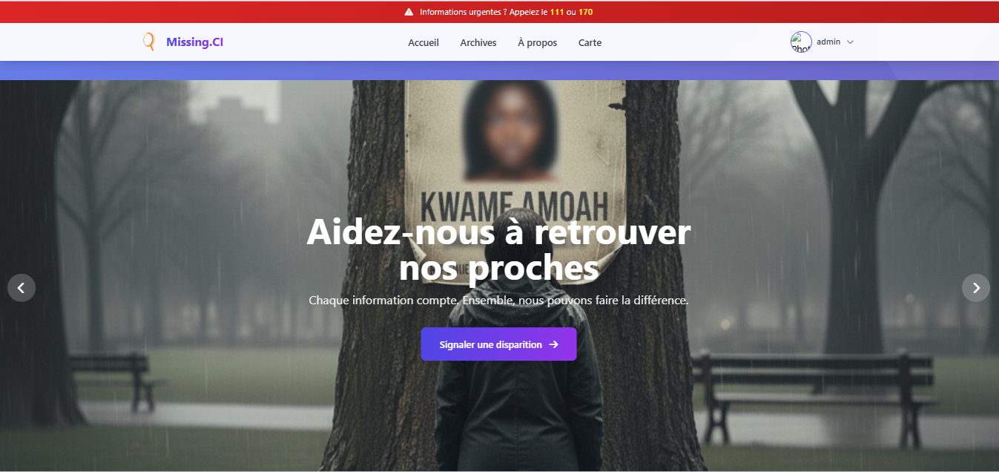
Page d'accueil dynamique présentant les derniers signalements, les actions rapides et l'appel à la solidarité citoyenne.
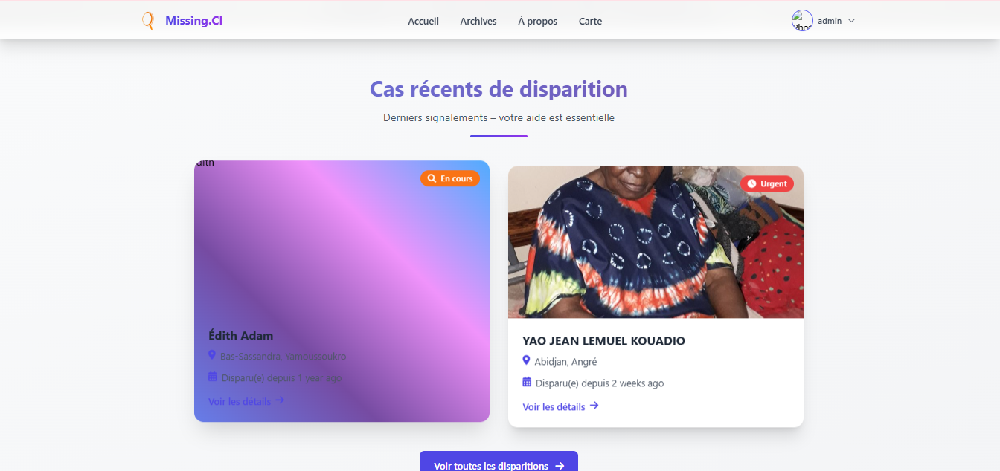
Suivez en temps réel les nouvelles disparitions et les appels à témoins.
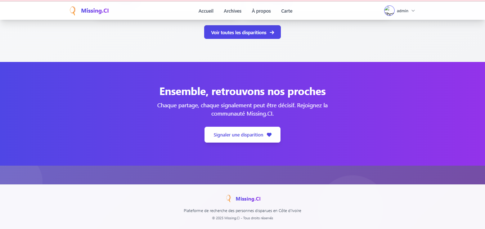
Cliquez sur le bouton d’action pour ouvrir le formulaire de signalement et déclarer une disparition en quelques étapes simples.
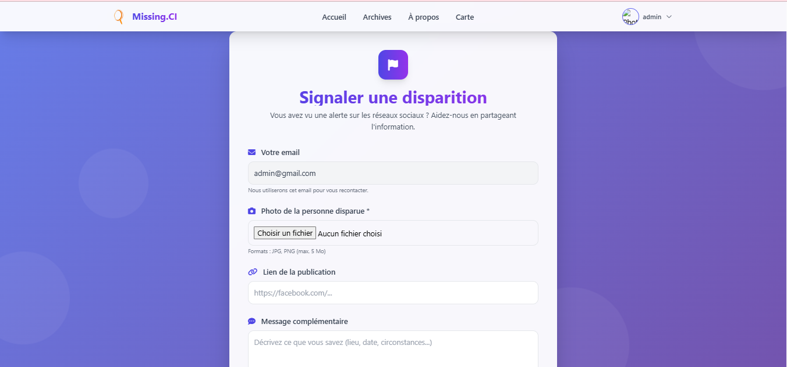
Formulaire complet : photos, description, lieu, date, signes distinctifs. Un dossier de qualité pour faciliter les recherches.
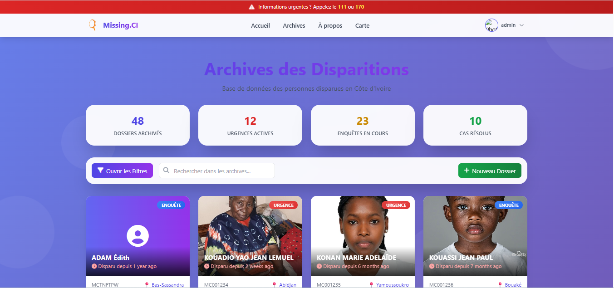
Liste paginée et filtrable (nom, date, statut) pour consulter tous les cas enregistrés.
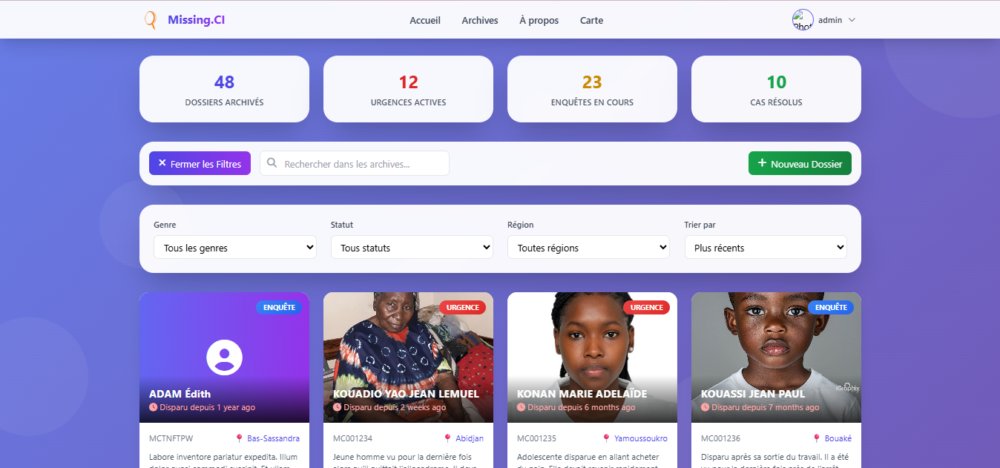
Affinez par région, âge, type de disparition. La carte interactive (leaflet) vous guide.
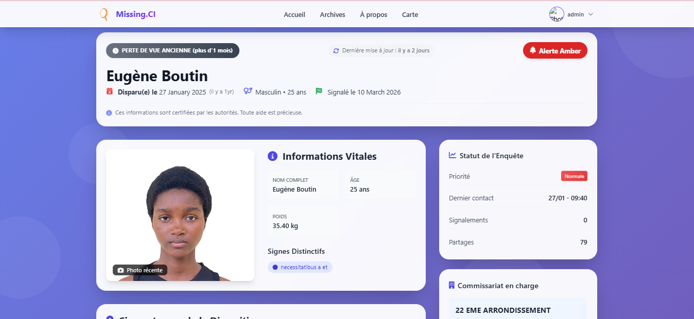
Photo, âge, taille, signes distinctifs, chronologie des événements, témoignages et bouton "Alerte Amber".
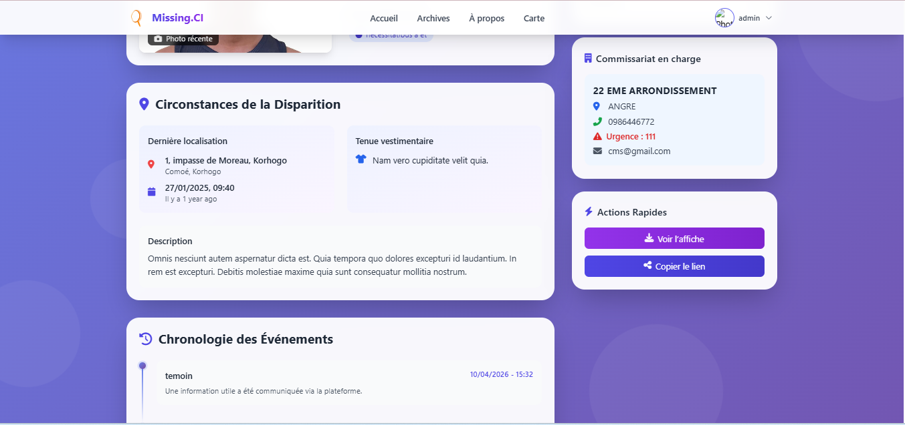
Copiez le lien unique d'un dossier et diffusez-le sur WhatsApp, Facebook, etc.
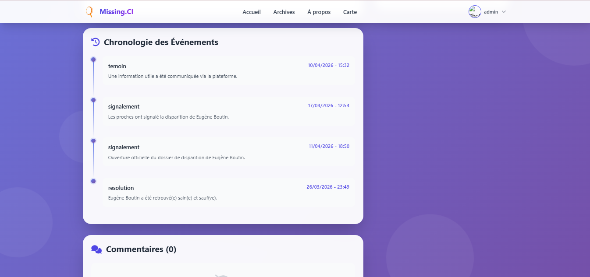
Les utilisateurs peuvent laisser des informations vérifiées par un modérateur.
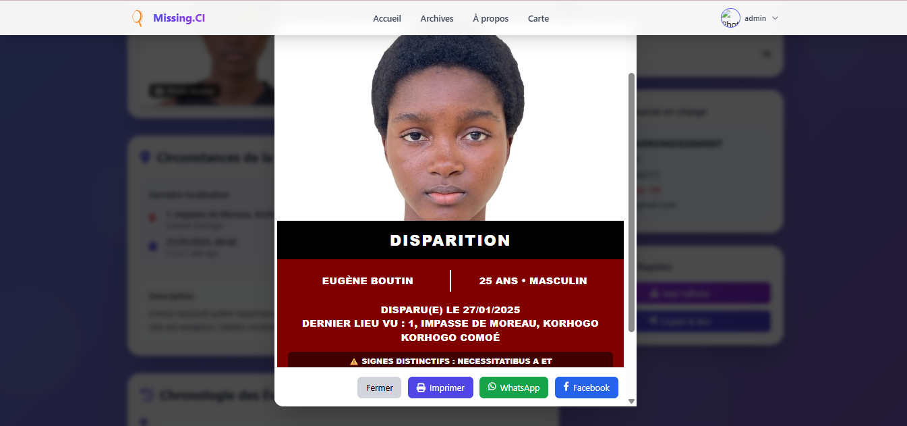
Cliquez "Voir l'affiche" pour obtenir un visuel prêt à imprimer et diffuser dans l'espace public.
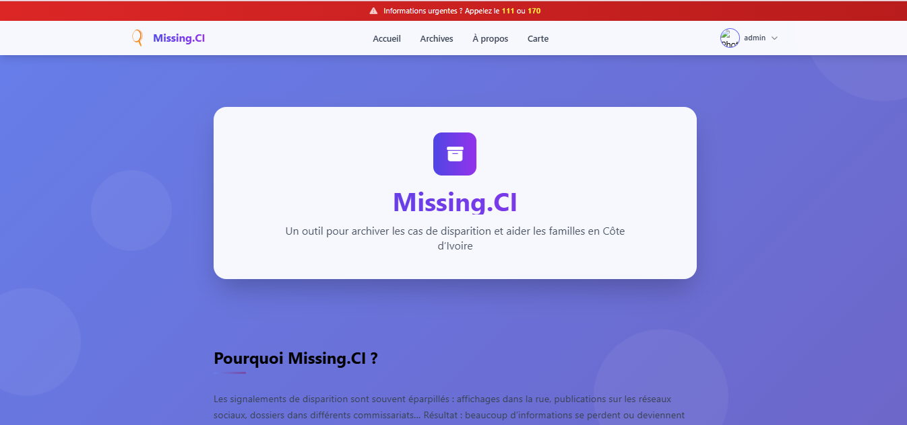
Missing CI est une plateforme ivoirienne innovante pour centraliser et accélérer la recherche de personnes disparues.
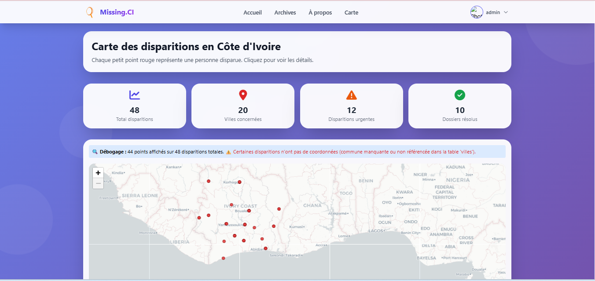
Un point rouge par disparition. Cliquez pour accéder au dossier. Identifiez les zones à risque.
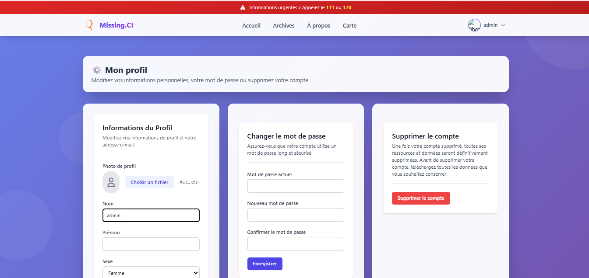
Gérez vos informations, photo de profil, mots de passe et préférences.
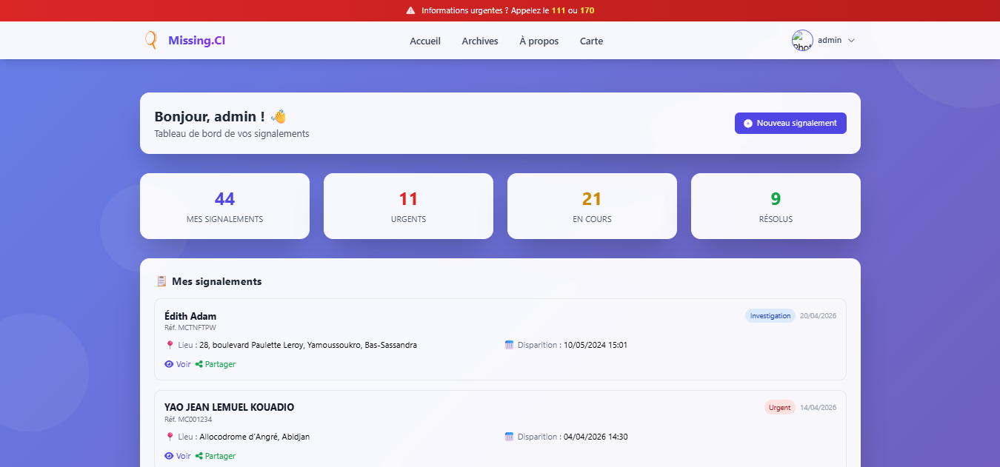
Visualisez vos signalements, statistiques personnelles et notifications.